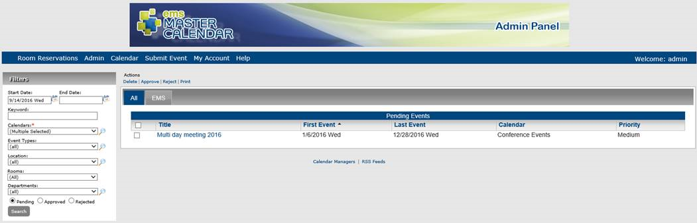

From the Manage Events page, authorized users can reject pending event requests.
1. You can first filter the list of pending events that you are approving
Manage Events page

3. Select the pending events you wish to reject.
4. Under Actions, click Reject. A Master Calendar - Notes dialog box opens. Enter any comments in this dialog box as to why you are rejecting the event request. These comments are sent automatically to the event requestor after you complete the rejection process.
5. After you enter the comments, click Send. A dialog box opens asking you if you are sure if you want to reject all the selected events.
6. Click OK in the message. A message opens indicating that all selected events were rejected.
7. Click OK in the message. The events are rejected and are removed from the Pending events list. For each rejected request, an email is automatically generated and sent to the event requestor informing them that the Calendar Manager has rejected their request as well as the reasons for the rejection. To select all pending events on the currently opened page for rejection in a single step, select the column header, Title. If you have multiple pages of events to reject, you must repeat this entire process on each page.
Example of rejected event request email
Page tags: article:topic